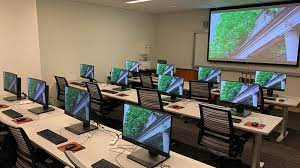
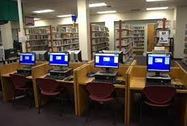

The department boasts of several exquisite facilities, designed to provide optimal environment for learning and research to operate smoothly.

The department is well-equipped with state-of-the-art labs, complete with the latest technology,that accommodates for artificial intelligence, robotics and cybersecurity research.
To discover the resources and simulators available, please visit our resources page
Experience innovation in our collabration spaces, designed to provide maximum comfort for group projects, research and discussions.
The department library is a massive space, with several computers to facilitate learning and research. The library is lined with massive shelves,containing several books ranging across several aspects of computer science.
To ensure student safety, the department has installed 24-hour surveillance cameras to deter any criminal activity. We are also equipped with access control systems and policies to ensure a safe learning environment.
Monday: 8 a.m - 4 p.m
Tuesday: 8 a.m - 4 p.m
Wednesday: 8 a.m - 4 p.m
Thursday: 8 a.m - 4 p.m
Friday: 8 a.m - 4 p.m
Saturday: Closed
Sunday: Closed